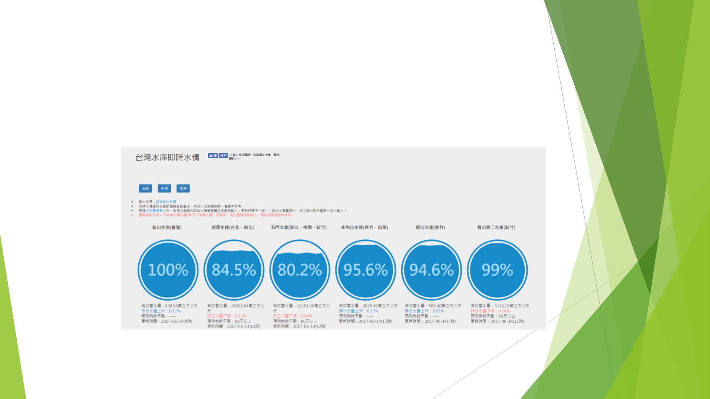
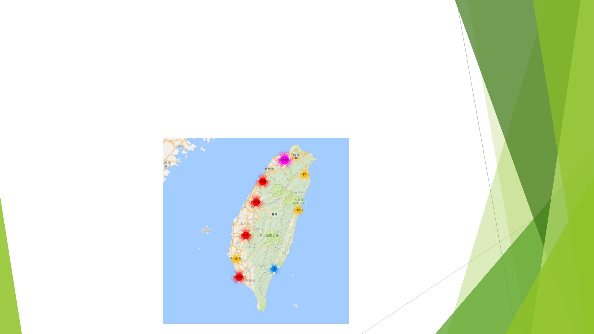

幫牠找個家
林得恩 M10515009
陳曉毅 M10515063

流浪動物認領養平台
2017年2月台灣「流浪動物零安樂死」政策正式上路，表面
上流浪動物躲過了安樂死的命運，但實際上這些動物在超收
的收容所，住在壅擠的籠舍讓牠們的健康每況愈下。因此如
何讓這些動物可以快速的被認養正是我們平台要做的事。
服務功能
以地圖顯示台灣縣市流浪動物數量
及時定位顯示附近的收容所
查詢附近合格動物商家及動物醫院
評審問題
Q1:已有類似資訊平台
目前類似的資訊平台共同的問題是使用率不高，其原因不外乎
是操作不便利、流浪動物的資訊老舊鮮少更新。
Q2:僅限登記在案的動物，充其量是資料管理介面，對廣大
無資料的流浪動物仍無解
我們主要的目的是要提供完整的流浪動物認養資訊，讓牠們不
會因為不流通的資訊而在收容所過完一生。

Q3:資料之應用深度仍可再加強
地圖化呈現資料，結合其他opendata如登記合法的寵物用品店
家、友善動物的公園和店家，豐富地圖化的資料。
Q4:同質性APP相當多
同Q1，目前上市的寵物認領養APP都是由各縣市政府主導，具
有地域性，但流浪動物資訊更新很慢，導致使用率低落。

作品進度

使用google map地圖化呈現流浪動物資料